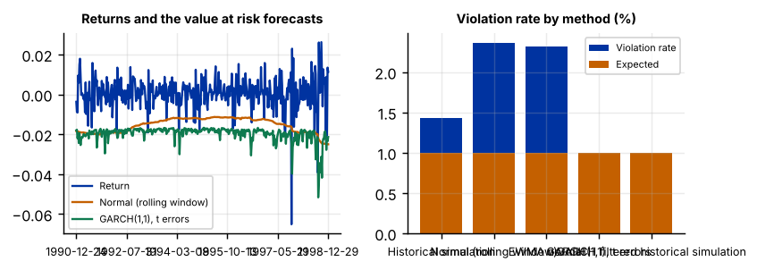

Run this model on your own data in Open Econometric Systems →
Step 1The question and the model
How bad can a bad day be? The value at risk at level \(p\) is the return quantile \(\text{VaR}_t\) with \(\Pr(r_t < \text{VaR}_t \mid \mathcal F_{t-1}) = p\), and the expected shortfall is the mean return below it:
Each model forecasts the conditional distribution of tomorrow's return:
| Model | Forecast of the distribution |
|---|---|
| Historical simulation | The empirical distribution of the last \(w\) returns |
| Normal, rolling window | Normal with the mean and standard deviation of the last \(w\) returns |
| EWMA | Normal with variance \(\sigma_t^2 = \lambda\sigma_{t-1}^2 + (1 - \lambda)r_{t-1}^2\) (RiskMetrics, \(\lambda = 0.94\)) |
| GARCH(1,1), t errors | Variance from a GARCH(1,1) fitted on the first window, and a t distribution for the standardised residuals |
| GARCH filtered historical simulation | The same variance, and the empirical quantile of the standardised residuals |
The forecasts are out of sample: no forecast uses data from its own day or later, and the GARCH parameters are estimated once on the first window. A forecast is violated when the return falls below it. Backtests ask three questions:
| Test | Null hypothesis |
|---|---|
| Kupiec (unconditional coverage) | The violation rate equals \(p\) |
| Christoffersen independence | A violation today does not make one tomorrow more likely |
| Conditional coverage | Both together (chi-square with 2 degrees of freedom) |
How to write it: the model
We forecast the one-day 99% value at risk and expected shortfall of the market index with five models: historical simulation on a rolling window of 500 days, a normal distribution with the rolling mean and standard deviation, the RiskMetrics EWMA with decay 0.94, a GARCH(1,1) with t errors estimated on the first 500 days and filtered forward, and a filtered historical simulation that uses the empirical quantile of the GARCH residuals. All forecasts are out of sample. We test the violation rate with Kupiec's likelihood-ratio test, the independence of the violations with Christoffersen's test, and their combination, and compare the realised losses on violation days with the expected shortfall forecast.
Step 2Load the data
import numpy as np
import pandas as pd
import oes_engine as oes # pip install -e open-econometric-systems/oes-engine
data = open("crspday.csv").read()
d = pd.read_csv("crspday.csv")
r = d.crsp
print(len(d), "days,", d.date.iloc[0], "to", d.date.iloc[-1])
print("mean %.3f%% s.d. %.3f%% min %.2f%% max %.2f%%" % (100 * r.mean(), 100 * r.std(), 100 * r.min(), 100 * r.max()))
print("skewness %.2f excess kurtosis %.2f" % (r.skew(), r.kurt()))
print("1%% quantile of all returns: %.2f%%" % (100 * r.quantile(0.01)))
print("share of days with |return| > 3 s.d.: %.2f%% (normal: 0.27%%)" % (100 * (abs(r - r.mean()) > 3 * r.std()).mean()))2528 days, 1989-01-03 to 1998-12-31 mean 0.068% s.d. 0.776% min -6.59% max 4.82% skewness -0.70 excess kurtosis 7.66 1% quantile of all returns: -2.06% share of days with |return| > 3 s.d.: 1.27% (normal: 0.27%)
How to read it
The sample has 2,528 trading days, 3 January 1989 to 31 December 1998. Daily returns average 0.068% with a standard deviation of 0.78%, the worst day is \(-6.59\)% and the best is +4.82%. The distribution is skewed to the left (skewness \(-0.70\)) and has fat tails (excess kurtosis 7.66). Returns more than three standard deviations from the mean occur on 1.27% of days, almost five times the 0.27% that a normal distribution gives, and the 1% quantile of all returns is \(-2.06\)%. This is why a normal model underestimates the risk.
Step 3Forecast and backtest
spec = dict(y="crsp", time="date", alpha=0.01, window=500)
res = oes.run("var_es", data, spec)
oes.summary(res)
oes.show(res, "Out-of-sample value at risk")Out-of-sample days: 2028
Tail probability: 0.01
Window: 500
GARCH t degrees of freedom: 4.66
Out-of-sample value at risk at the 99% level (2028 days)
Violations Violation rate (%) Expected rate (%) Mean VaR Mean ES Mean return on violation days Realised / forecast ES Quantile loss x100
Method
Historical simulation 29 1.4300 1.0 -0.0181 -0.0253 -0.0261 1.0260 0.0303
Normal (rolling window) 48 2.3669 1.0 -0.0154 -0.0177 -0.0221 1.2755 0.0330
EWMA normal 47 2.3176 1.0 -0.0159 -0.0182 -0.0208 1.2590 0.0316
GARCH(1,1), t errors 20 0.9862 1.0 -0.0198 -0.0268 -0.0299 1.0145 0.0288
GARCH filtered historical simulation 12 0.5917 1.0 -0.0221 -0.0305 -0.0349 1.0251 0.0292
Note: VaR is the 1% quantile of the return; a violation is a return below the forecast. Estimation window 500 days.How to read it
There are 2,028 out-of-sample days (the first 500 are the estimation window), so a correct 99% model should be violated on about 20 of them. Historical simulation is violated 29 times (1.43%), the rolling normal 48 times (2.37%) and the EWMA 47 times (2.32%): the two normal models understate the risk by more than half. The GARCH(1,1) with t errors, whose fitted t distribution has 4.7 degrees of freedom, is violated 20 times (0.99%), exactly the target. The GARCH filtered historical simulation is violated only 12 times (0.59%), so it is too conservative.
The mean VaR shows why: \(-1.54\)% for the rolling normal, \(-1.81\)% for historical simulation, \(-1.98\)% for the GARCH-t and \(-2.21\)% for the filtered simulation. The mean expected shortfall follows the same order. On violation days the average return is below the expected shortfall forecast for the normal models (the ratio of realised to forecast shortfall is 1.28 and 1.26) and close to it for the other three (1.01 to 1.03). The quantile loss, which rewards a forecast of the quantile for being accurate and not only for being safe, is lowest for the GARCH-t (0.0288) and the filtered simulation (0.0292).
Step 4The backtests
oes.show(res, "Backtests")Backtests (p-values)
Kupiec LR p Independence LR p Conditional coverage LR p
Method
Historical simulation 3.342 0.0675 7.186 0.0073 10.528 0.0052
Normal (rolling window) 27.655 0.0000 4.700 0.0302 32.355 0.0000
EWMA normal 25.925 0.0000 4.963 0.0259 30.889 0.0000
GARCH(1,1), t errors 0.004 0.9501 1.707 0.1914 1.711 0.4252
GARCH filtered historical simulation 4.001 0.0455 0.143 0.7054 4.144 0.1260
Note: Kupiec: the violation rate equals the tail probability. Independence: violations do not cluster. Conditional coverage: both together (2 df).How to read it
Kupiec's test rejects a violation rate of 1% for the rolling normal and the EWMA (p < 0.0001), does not reject it for the GARCH-t (p = 0.95), and is borderline for historical simulation (p = 0.068) and the filtered simulation (p = 0.046, too few violations). The independence test adds that the violations of historical simulation are clustered (p = 0.007), as are those of the two normal models (p = 0.03): after one violation another is more likely, because these models react slowly when volatility rises. The GARCH-t is the only model with independent violations at the 5% level and the only one passing the conditional coverage test comfortably (p = 0.43); the filtered simulation passes it too (p = 0.13).
Step 5Expected shortfall and the chart
oes.plot(res)
How to read it
The first chart shows the daily returns with the VaR forecasts of the rolling normal and the GARCH-t. The rolling-window line changes slowly and sits above the GARCH line most of the time; the GARCH line widens in turbulent periods and narrows in calm ones, which is why fewer returns fall below it. The second chart compares the violation rate of each method with the expected 1%: the normal models are more than double, historical simulation is in between and the two GARCH models are at or below the target.
Step 6Robustness: the tail level and the window
for alpha, w in ((0.05, 500), (0.01, 250), (0.01, 1000)):
rr = oes.run("var_es", data, dict(spec, alpha=alpha, window=w))
print(f"--- tail probability {alpha}, window {w}: {rr['nobs']} out-of-sample days")
for row in rr["tables"][0]["rows"]:
print(f"{row[0]:38s} violations {row[1]:4d} rate {row[2]:5.2f}% expected {row[3]:4.1f}%")--- tail probability 0.05, window 500: 2028 out-of-sample days Historical simulation violations 117 rate 5.77% expected 5.0% Normal (rolling window) violations 112 rate 5.52% expected 5.0% EWMA normal violations 106 rate 5.23% expected 5.0% GARCH(1,1), t errors violations 88 rate 4.34% expected 5.0% GARCH filtered historical simulation violations 72 rate 3.55% expected 5.0% --- tail probability 0.01, window 250: 2278 out-of-sample days Historical simulation violations 35 rate 1.54% expected 1.0% Normal (rolling window) violations 53 rate 2.33% expected 1.0% EWMA normal violations 63 rate 2.77% expected 1.0% GARCH(1,1), t errors violations 47 rate 2.06% expected 1.0% GARCH filtered historical simulation violations 47 rate 2.06% expected 1.0% --- tail probability 0.01, window 1000: 1528 out-of-sample days Historical simulation violations 31 rate 2.03% expected 1.0% Normal (rolling window) violations 49 rate 3.21% expected 1.0% EWMA normal violations 42 rate 2.75% expected 1.0% GARCH(1,1), t errors violations 23 rate 1.51% expected 1.0% GARCH filtered historical simulation violations 21 rate 1.37% expected 1.0%
How to read it
At the 5% level the ranking is different: all methods are close to 5% except the filtered simulation, which is too conservative (3.55%); the rolling normal (5.52%) and EWMA (5.23%) are fine because the normal distribution is accurate in the middle of the distribution. The fat tails matter only far out.
At the 1% level the window matters. With a 250-day window every model is violated too often (1.54% to 2.77%): 250 days include only two or three tail observations, and the GARCH parameters estimated on 250 days are imprecise. With 1,000 days the GARCH models are at 1.51% and 1.37%, historical simulation is at 2.03% and the normal models at 2.75% to 3.21%. A long window helps the GARCH models and does not help the others, because they react to the past 1,000 days as slowly as to the past 500.
Step 7Diagnostics: do the tests work?
def garch_t(n, seed):
rng = np.random.default_rng(seed); x = np.empty(n); s2 = 1.0
for t in range(n):
x[t] = np.sqrt(s2) * rng.standard_t(6) * np.sqrt(4 / 6)
s2 = 0.05 + 0.08 * x[t] ** 2 + 0.9 * s2
return x
names = ["Historical simulation", "Normal (rolling window)", "GARCH(1,1), t errors"]
rate = {k: [] for k in names}; reject = {k: 0 for k in names}
for s in range(20):
x = garch_t(2500, s)
sim = pd.DataFrame(dict(t=range(len(x)), x=x))
rs = oes.run("var_es", sim.to_csv(index=False), dict(y="x", time="t", alpha=0.01, window=600))
for row, bt in zip(rs["tables"][0]["rows"], rs["tables"][1]["rows"]):
if row[0] in rate:
rate[row[0]].append(row[2]); reject[row[0]] += bt[2] < 0.05
for k in names:
print(f"{k:28s} mean violation rate {np.mean(rate[k]):.2f}% (target 1%); Kupiec rejects in {reject[k]} of 20 samples")Historical simulation mean violation rate 1.34% (target 1%); Kupiec rejects in 8 of 20 samples Normal (rolling window) mean violation rate 1.84% (target 1%); Kupiec rejects in 18 of 20 samples GARCH(1,1), t errors mean violation rate 1.19% (target 1%); Kupiec rejects in 6 of 20 samples
How to read it
In 20 simulated series from a GARCH(1,1) with t(6) errors, 2,500 days each, the mean violation rate of the 99% VaR is 1.19% for the GARCH-t, 1.34% for historical simulation and 1.84% for the rolling normal. Kupiec's test rejects the rolling normal in 18 of 20 samples, historical simulation in 8 and the GARCH-t in 6. The GARCH-t is the true model here but is still rejected in 6 samples out of 20, more than the 1 expected: the parameters are estimated once on 600 days and an estimation error of that size makes the violation rate drift. This is the usual estimation risk of backtests with few violations (about 20 per sample), and the reason to read the tests together with the violation counts. The test suite also checks the Kupiec statistic and the violation counts against a manual calculation.
Step 8Write the results
How to write it: results
We forecast the one-day 99% value at risk and expected shortfall of the CRSP value-weighted market index on 2,028 out-of-sample days (24 December 1990 to 31 December 1998) with five models. The index has fat tails (excess kurtosis 7.7) and returns beyond three standard deviations occur on 1.27% of days. Out of sample, the rolling normal and the EWMA are violated on 2.37% and 2.32% of days, against the 1% target (Kupiec p < 0.0001), and their violations cluster (independence p = 0.03). Historical simulation is violated on 1.43% (p = 0.068, independence p = 0.007). A GARCH(1,1) with t errors is violated on 0.99% of days (p = 0.95) with independent violations (p = 0.19) and has the lowest quantile loss; the realised loss on violation days is 1.01 times its expected shortfall, against 1.28 for the rolling normal. At the 5% level all models except the filtered simulation are close to nominal, and at 1% the ranking holds for windows of 500 and 1,000 days but not for 250. In simulation, Kupiec's test rejects the rolling normal in 18 of 20 GARCH-t samples.
References. Kupiec (1995), Journal of Derivatives; Christoffersen (1998), International Economic Review; J.P. Morgan (1996), RiskMetrics Technical Document; Barone-Adesi, Giannopoulos and Vosper (1999), Journal of Futures Markets; McNeil and Frey (2000), Journal of Empirical Finance; Bollerslev (1986), Journal of Econometrics; Acerbi and Tasche (2002), Journal of Banking and Finance.